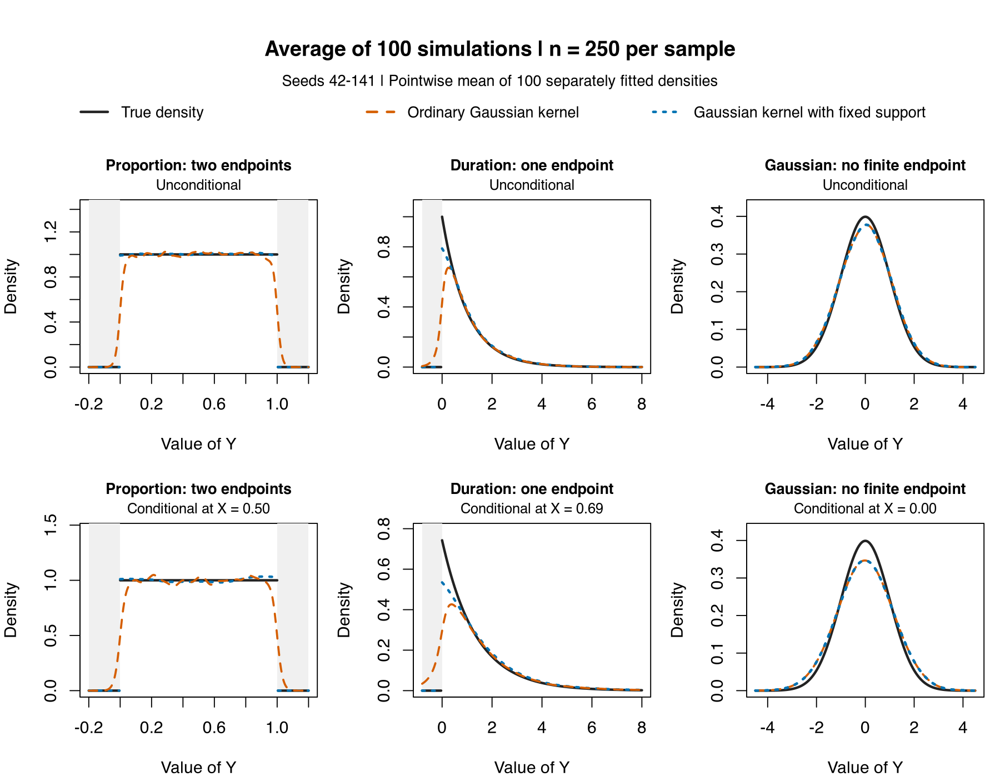

Boundary-Aware Density Estimation
npudens, npcdens, boundary correction, support bounds, density estimation
This worked example develops the evidence behind the shorter support-selection guide. It compares ordinary and boundary-adjusted Gaussian-kernel estimates when a variable has two known endpoints, one known endpoint, or no finite endpoint. The results illustrate the mechanism; they are not a promise of equally large gains for every bounded density.
One sample: two endpoints, one endpoint, and an unbounded control
The examples retain the default second-order Gaussian kernel. The change is the support information supplied to the estimator. The top row shows unconditional densities; the bottom row shows conditional densities at the population median of \(X\). Each comparison uses the same sample of 250 observations, seed 42, and separately selected likelihood cross-validation ("cv.ml") bandwidths with five multistarts.

The unconditional examples are uniform on \([0,1]\), exponential with mean one, and standard normal. The conditional examples use the corresponding \(X\) distributions and \(f(y\mid x)=1+0.8(2x-1)(2y-1)\) on \([0,1]\), an exponential response with mean \(1+0.5x\), and \(Y=X+\varepsilon\) with \(\varepsilon\sim N(0,1)\) independent of \(X\), respectively. The conditional proportion density is uniform at the displayed median of \(X\) but changes shape elsewhere; the three-slice figure shows that variation.

Near a genuine endpoint, an ordinary symmetric kernel assigns mass outside the support. The bounded Gaussian kernel adjusts for the kernel mass remaining inside it. This reduces the leading endpoint distortion, although smoothing bias remains. The uniform example is particularly favorable: with a large bandwidth, the bounded estimate approaches the uniform density.
The fixed-support curves are extended by zero outside their declared support for display and scoring. The package is evaluated inside that support; its in-support estimates are unchanged. Support correction is distinct from the proper = TRUE option: these examples use the default local-constant conditional estimator with proper = FALSE, without post-estimation normalization.
What changes over repeated samples?
The next figure averages the fitted densities from 100 separately simulated samples of 250 observations each, using seeds 42–141. Each sample has its own selected bandwidths. The panels, evaluation points, and axis limits match the one-sample figure above; no samples are pooled into a larger fit.

Open the separate 100-simulation-average PNG or download its curve values. The average curves show systematic bias and average away much of the sample-to-sample fluctuation. They do not display estimator variance; the MISE results below average each sample’s integrated squared error and include both.

Across 100 paired draws at each sample size, the known-support specification reduced mean integrated squared error in both finite-boundary examples. The table reports the percentage reduction relative to the ordinary estimator. The seeds were fixed in advance (42–141); both procedures used the same data and the same optimizer seed within each pair.
| Target | Sample size | Proportion: two endpoints | Duration: one endpoint | Gaussian: no finite endpoint |
|---|---|---|---|---|
| Unconditional | 100 | 86.7% | 74.5% | Numerical tie |
| Unconditional | 250 | 91.6% | 81.0% | Numerical tie |
| Conditional | 100 | 54.5% | 66.3% | Numerical tie |
| Conditional | 250 | 66.3% | 65.2% | Numerical tie |
Unconditional loss integrates squared error over the whole real line. Conditional loss is \(E_X[\int\{\widehat f(y\mid X)-f(y\mid X)\}^2\,dy]\), using the population distribution of \(X\). Thus these are integrated losses, not equally weighted errors on the plotting grid. Average gains remain positive in every finite-boundary case when loss is restricted to the true support. The corrected estimator wins in 98–100 of the 100 pairs in these cases; improvement on each sample is not guaranteed.
Also available are the conditional averages at three X values and conditional surfaces.


Infinite bounds and the conditional estimator
At a common bandwidth, "fixed" with (-Inf, Inf) reproduced ordinary predictions exactly in all 400 Gaussian pairs. Separately selected CVML fits were identical unconditionally and differed by at most \(6.30\times10^{-8}\) conditionally. For an unbounded variable, simply omit the boundary arguments.
This does not establish equality of every bandwidth selector. In np 0.80-1, conditional "cv.ls" with explicitly infinite response bounds uses a finite quadrature surrogate and issues a warning; it can select different bandwidths from the ordinary unbounded route. See the selector checks.
For these fixed-bandwidth local-constant conditional fits, the common query-centered correction on the \(X\) side cancels from the density ratio at a given bandwidth. The direct correction shown here is on the \(Y\) side. Supplying the correct \(X\) support remains appropriate, but these examples do not demonstrate a separate \(X\)-boundary shape improvement.
Reproduce and inspect
Download np_density_bounds_quickstart.R to generate the six one-sample fits and their figure and to check the infinite-bounds control.
The retained simulation artifacts provide progressively more detail:
- complete MISE summary and paired Monte Carlo standard errors,
- per-fit results,
- simulation definitions and numerical checks.
Return to Density, Distribution, Quantiles for the broader estimation workflow.